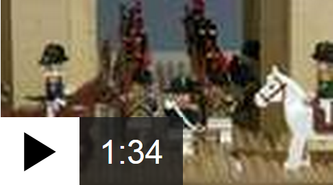

Watch/Listen World Service radio Solar Impulse: Ready for Pacific flight 30 May 2015 Blatter defiant as he faces questions 30 May 2015 How Blatter charmed Africa 29 May 2015 Splashdown for tightrope competitor 30 May 2015 One World Observatory opens to public 30 May 2015  Napoleon's life in Lego for anniversary 30 May 2015 Share with BBC News

 Sign in
Sign in